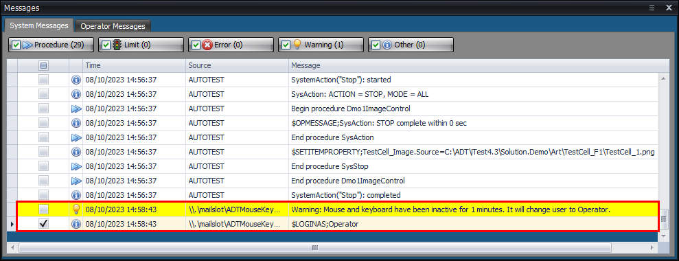
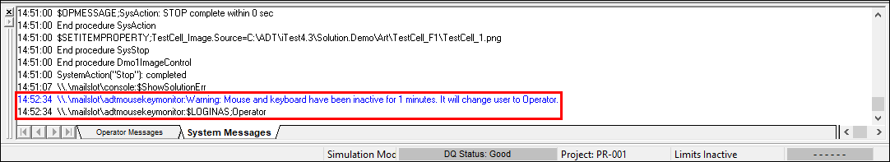

iTest User's Guide
To ensure the security of your system, it may be necessary to automatically log a user out of AutomationPanel or iTest Console after a period of inactivity. When a user is automatically logged out of AutomationPanel or iTest Console, the Operator user is logged in. By default, the Operator user type prevents editing of layouts and restricts other behavior in iTest. This guide details the steps for setting up your system to automatically log a user out of iTest after a specified period of inactivity. For more information about iTest security, see the the Managing Security guide.
In order to use this feature, you must configure the following INI settings:
INI Settings
| Setting | Location | Configuration |
| Preload | powertek.ini | Add \\MouseKeyMonitor.exe to this setting. If there are multiple executables in this setting, use >> to separate each executable. Example: PreLoad=\\PythonEngine.exe>>\\MouseKeyMonitor.exe>> |
| InactiveTimeoutMinutes | powertek.ini | Add this setting to the powertek.ini file and specify the amount of time in minutes to wait before logging the user out. |
| iTestLogin | config.ini | Enables login security settings for your system. |
After the mouse and keyboard have been inactive for the amount of time as specified in the InactiveTimeoutMinutes setting, two messages are sent to Softpanel. The first message indicates inactivity, and the second message logs in the Operator. These messages can be viewed in AutomationPanel's Messages panel or iTest Console's Message Bar.
AutomationPanel - Messages Panel

iTest Console - Messages Bar
